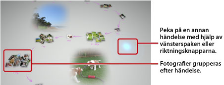

Titta på fotografier
När du startar Photo Gallery kommer alla fotografier som är sparade på lagringsminnet i PS3™-systemet att analyseras och grupperas efter händelser automatiskt. Fotografier grupperas i händelser baserat på datum och tid då fotografiet togs.
Välja händelser
Flytta från foto till foto eller från händelse till händelse med hjälp av vänsterspaken eller riktningsknapparna. Du kan välja flera fotografier eller händelser genom att trycka på  -knappen för varje val.
-knappen för varje val.

Ändra det sätt som fotografierna visas på
För att ändra det sätt som fotografierna visas på, välj grupper eller händelser, och tryck sedan på  -knappen. Skärmen ändras på det sätt som nedanstående bilder visar. Tryck på
-knappen. Skärmen ändras på det sätt som nedanstående bilder visar. Tryck på  -knappen för att gå tillbaka till föregående skärm.
-knappen för att gå tillbaka till föregående skärm.
Tips!
När ett fotografi visas i helskärm, kommer du åt kontrollpanelen som används under kategorin  (Foto) i XMB™-skärmen genom att trycka på
(Foto) i XMB™-skärmen genom att trycka på  -knappen. Du kan därefter använda tillgängliga kontrollpanelsalternativ på det visade fotografiet.
-knappen. Du kan därefter använda tillgängliga kontrollpanelsalternativ på det visade fotografiet.
Titta på foton som ett bildspel
För att spela upp ett bildspel, välj en spellista eller en händelse från [Biblioteksområdet], tryck på -knappen och välj därefter  (Bildspel). Från den skärm som visas, ställ in alternativen för bildspelet enligt beskrivningen nedan och välj därefter [Starta].
(Bildspel). Från den skärm som visas, ställ in alternativen för bildspelet enligt beskrivningen nedan och välj därefter [Starta].
| Bildspelsformat | Välj hur du vill att foton ska visas i bildspelet. |
|---|---|
| Bildspelshastighet | Välj bildspelshastighet. |
| Sortera | Välj ordningsföljden på fotona. |
| Bildspelsmusik | Välj den bakgrundsmusik som ska spelas upp under ett bildspel från det musikinnehåll som finns med i programmet Photo Gallery. |
 |
Välj den bakgrundsmusik som ska spelas upp under ett bildspel från kategorin  (Musik) i XMB™-skärmen. (Musik) i XMB™-skärmen. |
Tips!
- Under visningen av ett bildspel, kommer du åt kontrollpanelen för kategorin (Foto) genom att trycka på -knappen. Du kan därefter använda tillgängliga kontrollpanelalternativ för bildspelet.
- När foton visas i [Biblioteksområdet], kan du välja [Likhet] under [Sortera] för att ordna fotona baserade på bildernas likhet.
Ändra bakgrundsmusiken
Du kan ändra den musik som spelas upp i bakgrunden medan du tittar på fotona. Tryck på PS-knappen på den trådlösa handkontrollen för att ta fram XMB™-skärmen, gå till (Musik), och välj sedan den musikfil som du vill spela upp.
Tips!
- För att ändra bakgrundsmusik för ett bildspel, välj den musik som du vill spela upp innan du startar bildspelet.
- Medan du använder Photo Gallery och du väljer ett musikspår som är sparat på ett lagringsmedia som bakgrundsmusik och därefter startar ett bildspel, kan det inträffa att spåret inte spelas upp igen när bildspelet är avslutat.